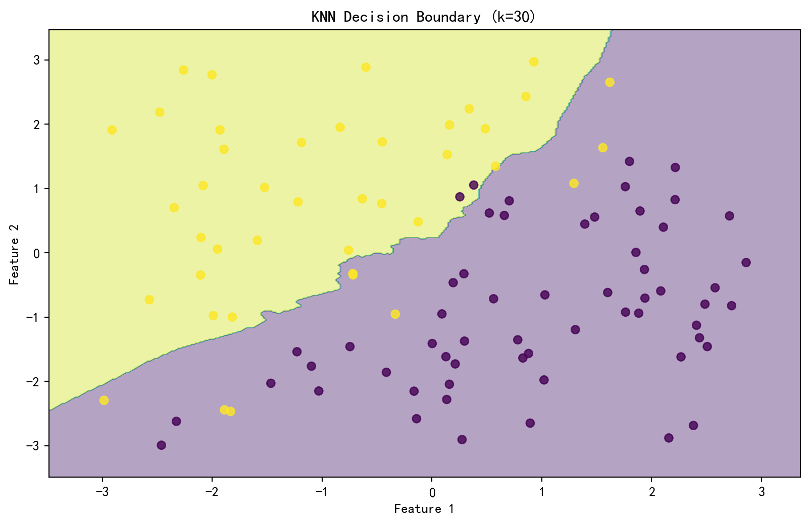

# Import necessary libraries
import pandas as pd
import numpy as np
import matplotlib.pyplot as plt
from sklearn.preprocessing import StandardScaler
import seaborn as sns
# Set random seed for reproducibility
np.random.seed(42)
# Set Chinese font display
plt.rcParams['font.sans-serif'] = ['SimHei'] # For displaying Chinese labels
plt.rcParams['axes.unicode_minus'] = False # For displaying minus signs correctlyImplementation and Analysis of K-means and KNN Algorithms
1. K-means Algorithm Implementation
1.1 Data Preparation
# Read Palmer Penguins dataset
penguins = pd.read_csv('palmer_penguins.csv')
# Extract required features: bill_length_mm and flipper_length_mm
X = penguins[['bill_length_mm', 'flipper_length_mm']].dropna()
# Data standardization
scaler = StandardScaler()
X_scaled = scaler.fit_transform(X)1.2 K-means Algorithm Implementation
class KMeans:
def __init__(self, n_clusters=3, max_iters=100):
self.n_clusters = n_clusters
self.max_iters = max_iters
self.centroids = None
self.labels = None
self.history = []
def initialize_centroids(self, X):
# Randomly select k data points as initial centroids
idx = np.random.choice(len(X), self.n_clusters, replace=False)
return X[idx]
def assign_clusters(self, X, centroids):
# Calculate distances from each point to all centroids
distances = np.sqrt(((X - centroids[:, np.newaxis])**2).sum(axis=2))
# Assign each point to the nearest centroid
return np.argmin(distances, axis=0)
def update_centroids(self, X, labels):
# Update centroid positions as mean of each cluster
new_centroids = np.array([X[labels == k].mean(axis=0)
for k in range(self.n_clusters)])
return new_centroids
def fit(self, X):
# Initialize centroids
self.centroids = self.initialize_centroids(X)
self.history.append(self.centroids.copy())
for _ in range(self.max_iters):
# Assign clusters
old_centroids = self.centroids.copy()
self.labels = self.assign_clusters(X, self.centroids)
# Update centroids
self.centroids = self.update_centroids(X, self.labels)
self.history.append(self.centroids.copy())
# Check convergence
if np.all(old_centroids == self.centroids):
break
return self
def predict(self, X):
return self.assign_clusters(X, self.centroids)1.3 K-means Algorithm Evaluation and Visualization
import matplotlib.cm as cm
def plot_kmeans_steps(X, kmeans, title):
"""Plot each step of K-means clustering"""
k = kmeans.n_clusters
cmap = cm.get_cmap("tab10", k)
colors = [cmap(i) for i in range(k)]
fig, ax = plt.subplots(figsize=(10, 6))
ax.scatter(X[:, 0], X[:, 1], c='lightgray', alpha=0.5)
centroids = kmeans.history[-1]
for i, centroid in enumerate(centroids):
ax.scatter(centroid[0], centroid[1],
c=[colors[i]], marker='*', s=200, label=f'Cluster {i+1}')
labels = kmeans.labels
for i in range(kmeans.n_clusters):
cluster_points = X[labels == i]
ax.scatter(cluster_points[:, 0], cluster_points[:, 1],
c=[colors[i]], alpha=0.6)
ax.set_title(title)
ax.set_xlabel('Bill Length (Standardized)')
ax.set_ylabel('Flipper Length (Standardized)')
ax.legend()
plt.show()
def calculate_metrics(X, kmeans):
"""Calculate clustering evaluation metrics"""
# Calculate within-cluster sum of squares
wcss = 0
for i in range(kmeans.n_clusters):
cluster_points = X[kmeans.labels == i]
centroid = kmeans.centroids[i]
wcss += np.sum((cluster_points - centroid) ** 2)
return wcss
# Run K-means algorithm and evaluate different K values
k_values = range(2, 8)
wcss_values = []
for k in k_values:
kmeans = KMeans(n_clusters=k)
kmeans.fit(X_scaled)
wcss = calculate_metrics(X_scaled, kmeans)
wcss_values.append(wcss)
# Plot clustering results
plot_kmeans_steps(X_scaled, kmeans, f'K-means Clustering Results (K={k})')
# Plot elbow curve
plt.figure(figsize=(10, 6))
plt.plot(k_values, wcss_values, 'bo-')
plt.xlabel('Number of Clusters (K)')
plt.ylabel('Within-Cluster Sum of Squares (WCSS)')
plt.title('K-means Elbow Curve')
plt.show()C:\Users\ASUS\AppData\Local\Temp\ipykernel_79004\812609348.py:6: MatplotlibDeprecationWarning:
The get_cmap function was deprecated in Matplotlib 3.7 and will be removed in 3.11. Use ``matplotlib.colormaps[name]`` or ``matplotlib.colormaps.get_cmap()`` or ``pyplot.get_cmap()`` instead.
1.4 Results Analysis
By observing the elbow curve and clustering results for different K values, we can draw the following conclusions:
- The optimal K value can be determined from the elbow curve
- Different K values show various grouping patterns of penguin populations
- The clustering results can be evaluated for biological significance in relation to actual penguin species (Adelie, Gentoo, Chinstrap)
2. KNN Algorithm Implementation
2.1 Generate Synthetic Dataset
# Generate training data
n = 100
x1 = np.random.uniform(-3, 3, n)
x2 = np.random.uniform(-3, 3, n)
X_train = np.column_stack((x1, x2))
# Define decision boundary
boundary = np.sin(4*x1) + x1
y_train = np.where(x2 > boundary, 1, 0)
# Generate test data
np.random.seed(43) # Use different seed
x1_test = np.random.uniform(-3, 3, n)
x2_test = np.random.uniform(-3, 3, n)
X_test = np.column_stack((x1_test, x2_test))
boundary_test = np.sin(4*x1_test) + x1_test
y_test = np.where(x2_test > boundary_test, 1, 0)2.2 KNN Algorithm Implementation
class KNN:
def __init__(self, k=3):
self.k = k
def fit(self, X, y):
self.X_train = X
self.y_train = y
return self
def predict(self, X):
predictions = []
for x in X:
# Calculate distances to all training points
distances = np.sqrt(np.sum((self.X_train - x)**2, axis=1))
# Get indices of k nearest neighbors
k_indices = np.argsort(distances)[:self.k]
# Get labels of these neighbors
k_nearest_labels = self.y_train[k_indices]
# Perform majority voting
prediction = np.bincount(k_nearest_labels).argmax()
predictions.append(prediction)
return np.array(predictions)2.3 KNN Algorithm Evaluation and Visualization
def plot_decision_boundary(X, y, model, title):
"""Plot decision boundary"""
# Create grid points
x_min, x_max = X[:, 0].min() - 0.5, X[:, 0].max() + 0.5
y_min, y_max = X[:, 1].min() - 0.5, X[:, 1].max() + 0.5
xx, yy = np.meshgrid(np.arange(x_min, x_max, 0.02),
np.arange(y_min, y_max, 0.02))
# Predict classes for grid points
Z = model.predict(np.c_[xx.ravel(), yy.ravel()])
Z = Z.reshape(xx.shape)
# Plot decision boundary
plt.figure(figsize=(10, 6))
plt.contourf(xx, yy, Z, alpha=0.4)
plt.scatter(X[:, 0], X[:, 1], c=y, alpha=0.8)
plt.title(title)
plt.xlabel('Feature 1')
plt.ylabel('Feature 2')
plt.show()
# Test different k values
k_values = range(1, 31)
accuracies = []
for k in k_values:
knn = KNN(k=k)
knn.fit(X_train, y_train)
y_pred = knn.predict(X_test)
accuracy = np.mean(y_pred == y_test)
accuracies.append(accuracy)
# Plot decision boundary for specific k values
if k in [1, 5, 15, 30]:
plot_decision_boundary(X_train, y_train, knn,
f'KNN Decision Boundary (k={k})')
# Plot accuracy for different k values
plt.figure(figsize=(10, 6))
plt.plot(k_values, accuracies, 'bo-')
plt.xlabel('k Value')
plt.ylabel('Accuracy')
plt.title('KNN: Relationship between k Value and Accuracy')
plt.grid(True)
plt.show()

2.4 Results Analysis
By observing the classification results and accuracy curves for different k values, we can draw the following conclusions:
- The choice of k value significantly affects model performance
- Smaller k values may lead to overfitting, resulting in more irregular decision boundaries
- Larger k values may lead to underfitting, resulting in smoother decision boundaries
- The optimal k value should balance model complexity and generalization ability
3. Conclusion
This experiment implemented two classic machine learning algorithms: K-means clustering and K-nearest neighbors classification. Through the implementation and analysis of these two algorithms, we can draw the following conclusions:
- K-means Algorithm:
- Effectively discovers natural groupings in data
- Optimal number of clusters can be determined using the elbow method
- Clustering results have practical biological significance in the penguin dataset
- KNN Algorithm:
- Simple but effective classification algorithm
- Choice of k value is crucial for model performance
- Performs well on datasets with nonlinear decision boundaries
Both algorithms demonstrate important concepts in machine learning: - Importance of hyperparameter selection (choice of k value) - Multiple metrics for model evaluation - Role of visualization in understanding algorithm behavior